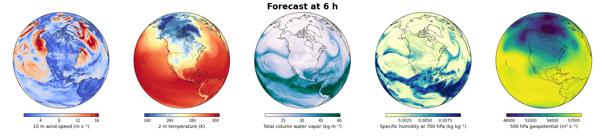
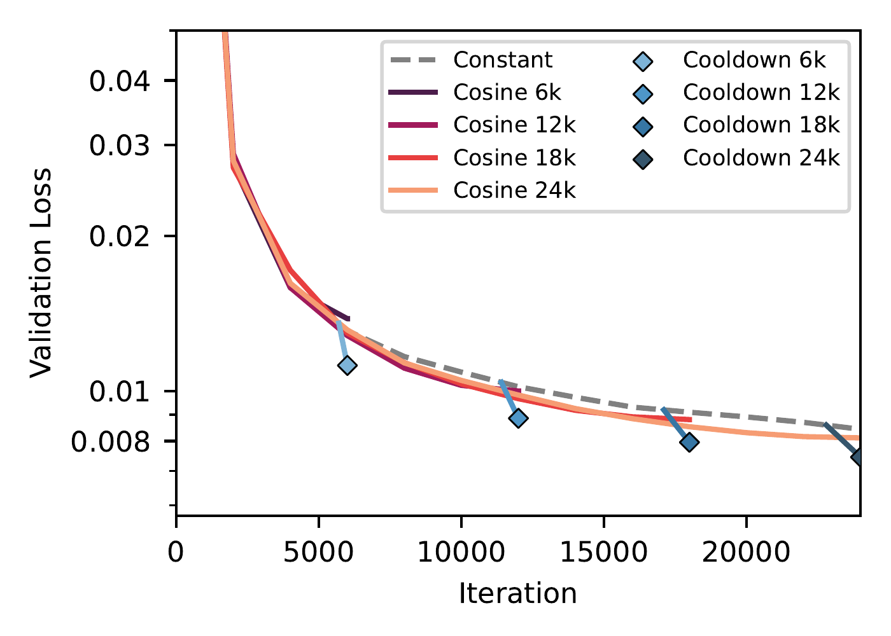
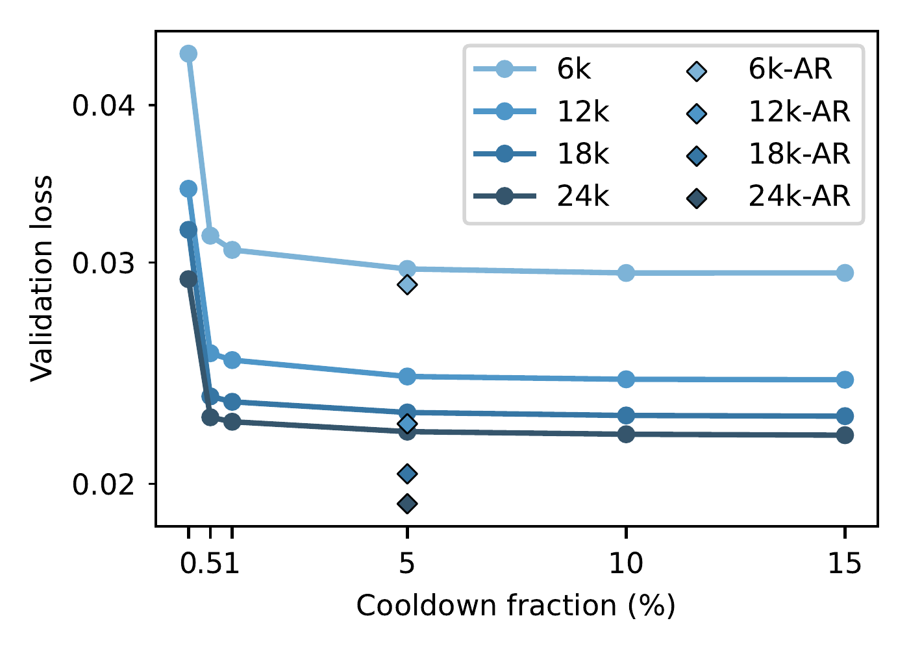
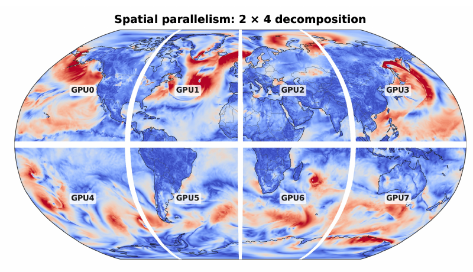
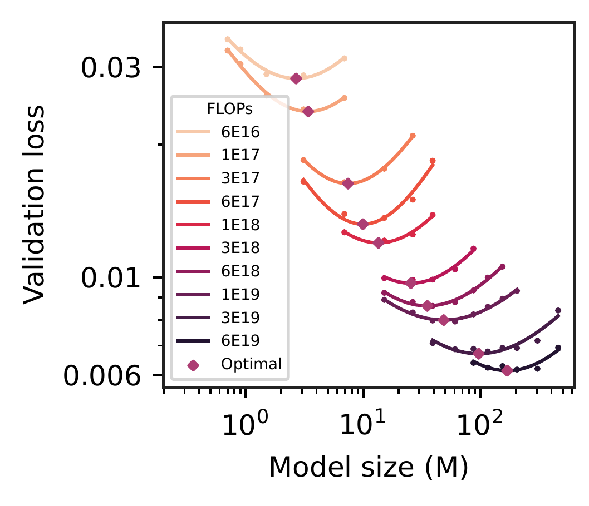
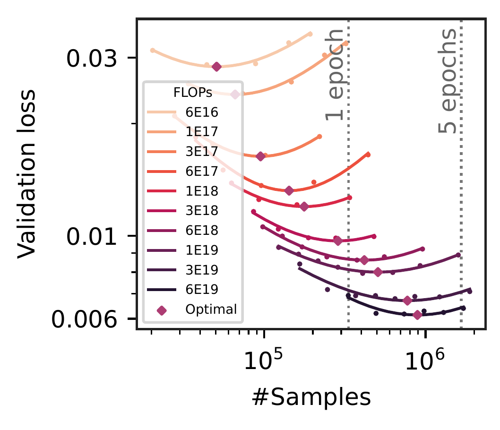
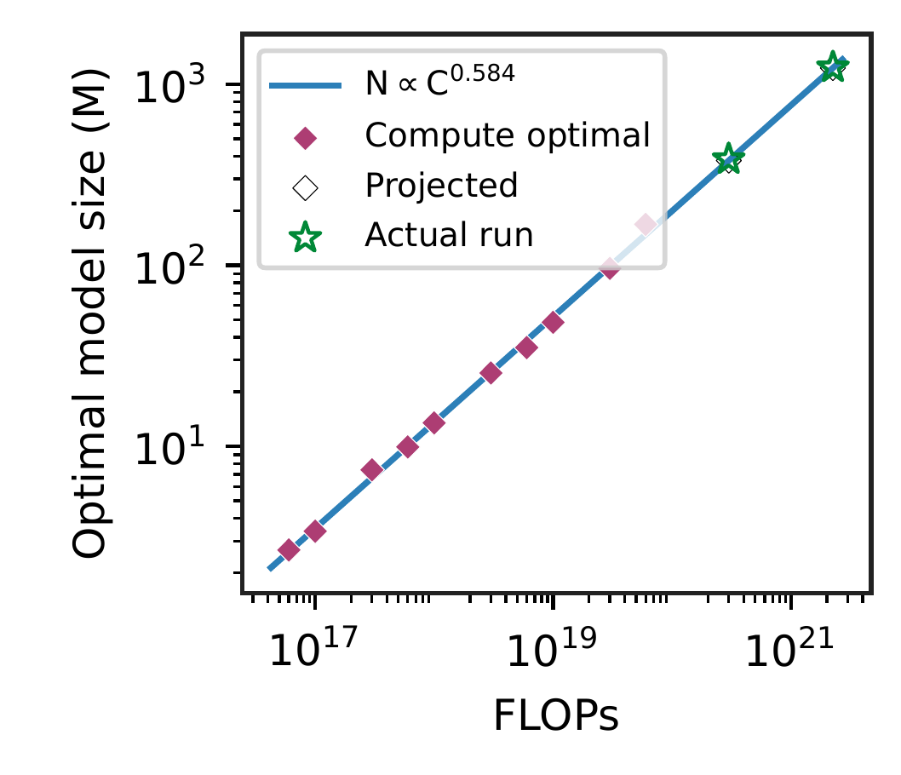
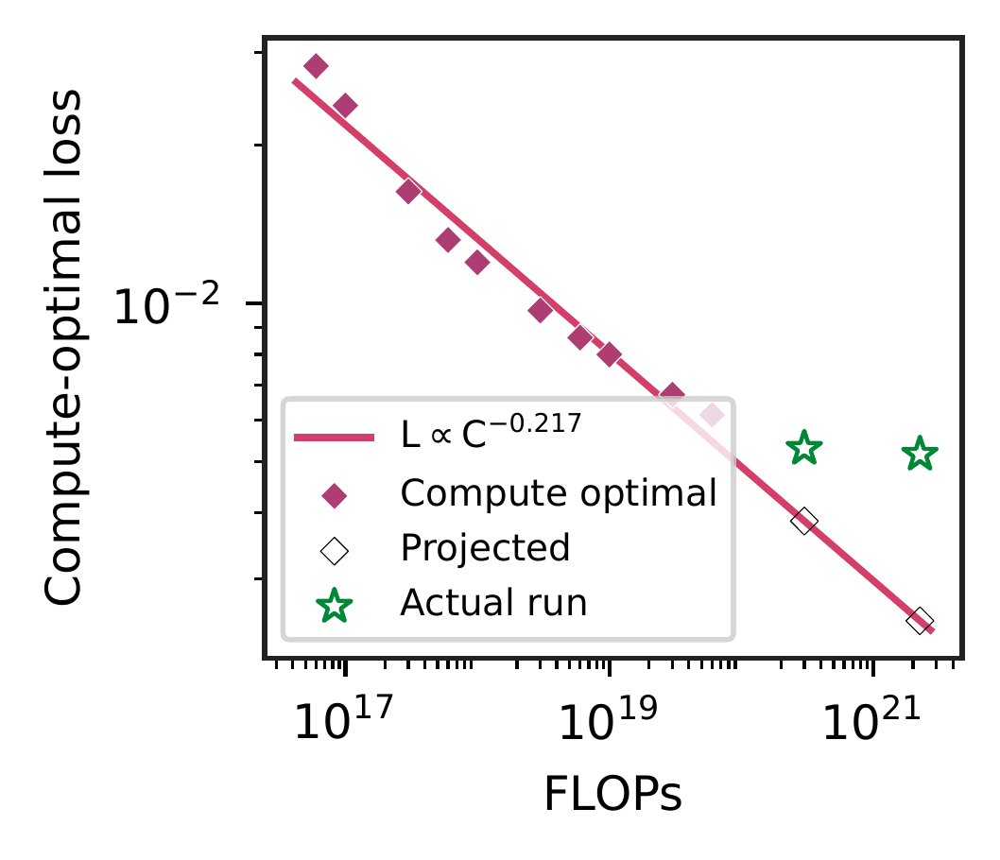
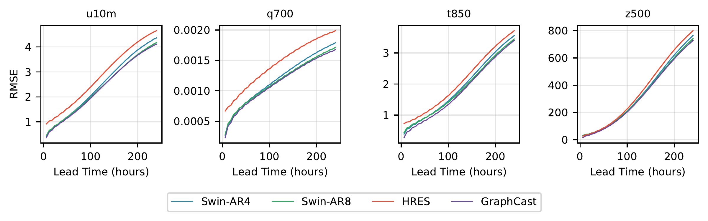
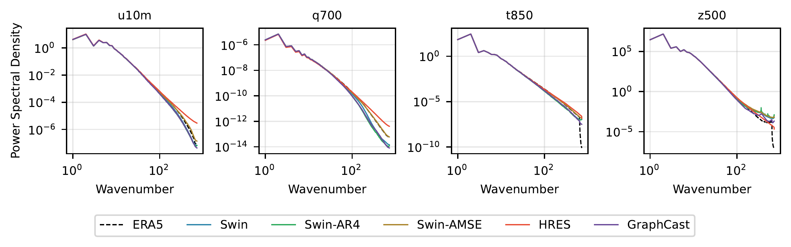

One run, many budgets.
Constant learning rates with periodic cooldowns outperform cosine schedules in the tested settings, while reusing a single training trajectory.
NeurIPS 2026ICLR 2026 · Foundation Models for Science Workshop
1 Lawrence Berkeley National Laboratory2 Oak Ridge National Laboratory3 ICSI4 UC Berkeley

The paper
Neural scaling laws, which in some domains can predict the performance of large neural networks as a function of model, data, and compute scale, are the cornerstone of building foundation models in Natural Language Processing and Computer Vision. We study neural scaling in Scientific Machine Learning, focusing on models for weather forecasting. To analyze scaling behavior in as simple a setting as possible, we adopt a minimal, scalable, general-purpose Swin Transformer architecture, and we use continual training with constant learning rates and periodic cooldowns as an efficient training strategy. We show that models trained in this minimalist way follow predictable scaling trends and can outperform standard cosine learning rate schedules. Cooldown phases can be repurposed to improve downstream performance, e.g., enabling accurate multi-step rollouts over longer forecast horizons or sharper predictions through spectral loss adjustments. We also systematically explore a wide range of model and dataset sizes under various compute budgets to construct IsoFLOP curves, and we identify compute-optimal training regimes. Extrapolating these trends to larger scales highlights potential performance limits, demonstrating that neural scaling can serve as an important diagnostic for efficient resource allocation. We open-source our code for reproducibility.
Motivation
The weather forecasting landscape is increasingly complex and fragmented: architectures, training objectives, and recipes keep evolving, alongside growing training costs. With so many choices changing at once, it becomes difficult to isolate what drives progress. Neural scaling laws have guided progress in language and vision, but remain underexplored in weather forecasting. By systematically varying model size, data, and compute, can we understand what scale alone can deliver?
Are we learning about weather or architecture idiosyncrasies?
Can minimalist weather models follow predictable scaling laws and reveal compute-optimal training regimes?
We use a minimalist, general-purpose Swin Transformer to isolate scaling, and continual training with short cooldowns to make the study practical. The goal is to first establish whether these models exhibit compute-optimal behavior, particularly with multiple epochs of training (which is standard for weather forecasting and scientific machine learning in general), then understand how they scale and how far that scaling extends.
Key findings
Minimalist architecture. Reusable training runs. Explicit compute budgets.
Constant learning rates with periodic cooldowns outperform cosine schedules in the tested settings, while reusing a single training trajectory.
Repurpose the cooldown for multi-step forecasting or spectral fidelity, without changing the core pre-training objective.
IsoFLOP curves reveal an optimal balance of model size and training samples. Larger extrapolation runs expose the limits of finite data.
Continual training
Conventional cosine schedules tie each training run to a fixed budget. Instead, we train with a constant learning rate and branch off short cooldowns at selected checkpoints. The main run continues, and each branch yields a model at a different compute budget. In our experiments, a cooldown of about 5% of the total training iterations is sufficient for the gains to plateau. Switching the cooldown objective to four-step autoregressive training further improves longer-horizon forecasts.


Distributed infrastructure
High-resolution weather inputs make activation memory a major bottleneck, especially during multi-step autoregressive training. Once the per-GPU batch size reaches one, data parallelism alone cannot reduce it further. We partition the spatial domain across GPUs along latitude and longitude, combining two-dimensional spatial parallelism with data parallelism to fit larger models and longer rollouts.

Shifted windows must communicate across partitions. Custom distributed roll operations exchange slices between neighboring GPUs in the forward pass and reverse the exchange in the backward pass. Shared weight gradients are reduced across the combined data- and spatial-parallel groups. Stateful DALI dataloaders support efficient I/O and checkpoint restarts, enabling the cooldown branches used in the scaling study. See the parallelism configuration and checkpointing documentation.
Neural scaling
We construct IsoFLOP curves across three orders of magnitude in training compute, from 6 × 1016 to 6 × 1019 FLOPs. At each budget, varying model size and sample count reveals a compute-optimal regime—even when training reuses data over multiple epochs.

IsoFLOPs: model size
IsoFLOPs: training samples
Optimal model size
Loss and extrapolationN★(C) ∝ C0.584
Optimal model size
S★(C) ∝ C0.431
Optimal training samples, including data reuse
Task adaptation
Cooldowns can be repurposed with alternative training objectives to adapt model behavior to downstream tasks. Multi-step autoregressive training during cooldown improves longer-horizon forecast RMSE, while adjusted MSE (AMSE) retains more small-scale structure. This adaptation happens within the short cooldown phase, leaving the core pre-training objective unchanged. A compute-optimal 204M-parameter Swin, trained with 6 × 1019 FLOPs and adapted through autoregressive cooldowns, is competitive with GraphCast on the reported 2020 evaluation.


Select any figure to enlarge it.
Open-source code
A distributed PyTorch framework for weather forecasting on ERA5, with a minimal Swin backbone and reproducible scaling workflows.
Read the documentationReference
@misc{subramanian2026neuralscalinglawsweather,
title = {On Neural Scaling Laws for Weather Emulation through Continual Training},
author = {Shashank Subramanian and Alexander Kiefer and Arnur Nigmetov and
Amir Gholami and Dmitriy Morozov and Michael W. Mahoney},
year = {2026},
eprint = {2603.25687},
archivePrefix = {arXiv},
primaryClass = {cs.LG},
url = {https://arxiv.org/abs/2603.25687}
}